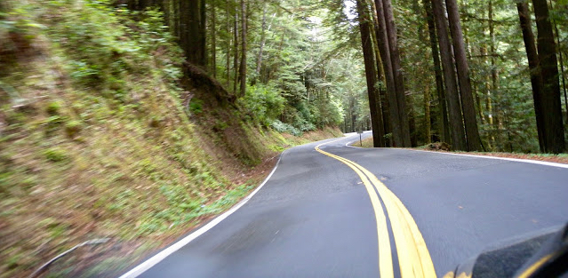

Este portal no pretende sustituir los dos millones setenta mil resultados que Don Google arroja cuando escribes “Guía Turística” Tampoco pretendo hacer un diario, pero la verdad es que, en esta encomienda uno nunca sabe lo que va a terminar escribiendo. Antes de que escribiera aquí, es decir antes del 2012 cuando empecé a escribir esto en blogspot.com, nunca se me había ocurrido llevar un registro de mis viajes, simplemente me nació.
Desde entonces procuro compartir con los 5 amigos que me leen y mis padres (fieles seguidores e inequívocos críticos) mis viajes y experiencias. Algunos relatos son especialmente chistosos (e.g. De Migraciones cetáceas o El del sureste) otros son tristes con aires melancólicos (como La triste historia de la Panta) y otros son vil informativos ( Chapada dos Veadeiros ). En fin, lo único que pretendo hacer con este espacio es motivarlos a viajar siempre que puedan, a escribir sobre ello e invitarlos a que escriban aquí cuando viajen (como lo hizo el buen Osvaldo en su entrada de Malinalco)